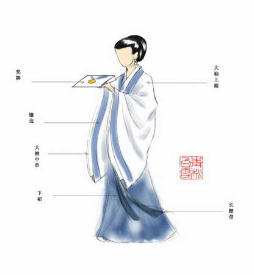

中国服饰的历史源远流长，从原始社会、夏商周、春秋战国、秦汉、魏晋南北朝、隋唐、宋辽夏金元、明、清，到近现代， 都以鲜明特色为世界所瞩目，主要以汉服为主，另外还有胡服、旗装等。

中国服饰的历史源远流长，从原始社会、夏商周、春秋战国、秦汉、魏晋南北朝、隋唐、宋辽夏金元、明、清，到近现代， 都以鲜明特色为世界所瞩目，主要以汉服为主，另外还有胡服、旗装等。
汉服，全称是“汉民族传统服饰”，又称汉衣冠、汉装、华服，是从黄帝即位到公元17世纪中叶（明末清初）, 在汉族的主要居住区，以“华夏－汉”文化为背景和主导思想，以华夏礼仪文化为中心，通过自然演化而形成的具有独特汉民族风貌性格， 明显区别于其他民族的传统服装和配饰体系，是中国“衣冠上国”、“礼仪之邦”、“锦绣中华”、赛里斯国的体现， 承载了汉族的染织绣等杰出工艺和美学，传承了30多项中国非物质文化遗产以及受保护的中国工艺美术。与汉人一词类似， 汉服中的“汉”字的词义外延亦存在着由汉朝扩大为整个民族指称的过程。如《马王堆三号墓遣册》关于“汉服”最早的记载： “简四四‘美人四人，其二人楚服，二人汉服’”中的“汉服”是指汉朝的服饰礼仪制度，即《周礼》《仪礼》《礼记》里的冠服体系， 而成书于唐朝的《蛮书》的记载：“初袭汉服，后稍参诸戎风俗，迄今但朝霞缠头，其余无异”中的“汉服”指的则是汉人的服饰礼仪制度。 汉服“始于黄帝，备于尧舜”，源自黄帝制冕服。定型于周朝，并通过汉朝依据四书五经形成完备的冠服体系，成为神道设教的一部分。 因此后来各个华夏朝代均宗周法汉以继承汉衣冠为国家大事 ，于是有了二十四史中的舆服志。
服饰是文明的窗口，衣着是思想的体现，服饰又是民族精神的外化，社会制度的表征。一部人类服饰史，从某种意义上看，也是一部外化了的人类文化发展史。因此，中国民族服饰在华夏文化的历史长河中散发着独特的魅力。 回顾近三千年的中国民族服饰，尽管在不同的历史时期各具特色，但在样式、服饰纹样及色彩等方面始终沿袭着一定的规律，从属于民族文化发展的大脉络。民族服饰展示的不仅仅是服饰语言，而且通过服饰语言，延伸了审美心理空间和审美心理感应，折射出了当时社会的政治、经济、文化变革。 历史上的民族服饰变革 人类服饰千姿百态，各个民族都有自己独特的服装。人类服饰心理有许多共同性，这些共同的心理活动决定着服饰发展的总趋向。古代“胡服骑射” 的故事是人尽皆知的，那次服装改革，在赵国上下引起了广泛而激烈的争论。宽大的袖子自古以来是人们的传统服装，传统如何能改？匈奴人是茹毛饮血的民族， 泱泱大国的中原人怎能去学蛮夷呢？改革的阻力非常之大，但赵武灵王的决心已定，他颁下诏书，凡不改服的大臣，一律革职。与此同时，他还大力推行政治经济改革。于是，服装的改革引发了一场改变传统观念的伟大政治运动，最终使赵国成为了战国时期的七强之一。赵武灵王的例子，从表面上看是统治者个人的行为，其实它是社会的强制行为，因为没有赵国大多数人求变的愿望，他的服饰改革也不可能获得成功。 那么人类共同的服饰心理特征是什么呢？一是求新。“新也者，美之称也。”人人都希望美，因此人人都在求新。哪怕是最最保守的人，也会偶尔拨动那沉寂已久的心弦，赶一把时髦。二是求异，力求表现自我。人们希望通过着装来显示自己的个性，表现自己的与众不同，这是一种超群意识。从历史上我们可以看到，一个民族的服饰为其他民族所接受，所效仿，那么这个民族在一定的历史时期内，必定是十分强盛的，其文化必定具有强大的生命力、影响力。服饰传播是文化传播的一部分，这种传播会使传入国的进步大大加快，使其文化昌盛。公元6-7世纪，中华民族进入了历史上的一个鼎盛时期。中国大唐的陶瓷、丝绸不仅为阿拉伯人、罗马人所喜，其文化也为东瀛人所折服。那时来唐求学的日本人，学习的热情绝不逊于现在赴美的留学生。他们返回东桑时，带回去了大量的经卷、诗歌和服饰。如今我们所看到的极富民族特色的和服，其实并不是大和民族的传统服装，而是大唐服饰的衍生品。 当历史步入19世纪末20世纪初时，东方的雄狮已经变成西方列强餐桌上的羔羊。世人引以为傲的四大发明也失去了昔日的辉煌。随着西方传教士和洋枪洋炮的涌入，西方的文明和先进的思想也大量涌入了中国。一些不愿看到祖国沦亡的有识之士，脱去了马蹄袖，剪掉了辫子，穿上了西装，东渡日本或赴欧美去学习救国之策。自此，西服成了先进文化、先进思想的象征，而穿西服则成了决心摆脱腐朽的封建礼教、决心改革、追求民主的表现。这种风气在东方许多国家中盛行开来，日本开此服饰风气比中国早，他们的人民更能接受服饰变革、迎接挑战。西服的这种象征意义，除了打倒“ 四人帮”之前那些闭关守国的年月外，对中国人来讲一直未变。这也许就是许多国人至今仍喜欢穿西装的原因之一吧。